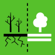

The 12 Targets of Goal 15

Target 15.1
CONSERVE AND RESTORE TERRESTRIAL AND FRESHWATER ECOSYSTEMS
Target 15.1 aims to ensure the conservation, restoration and sustainable use of terrestrial and inland freshwater ecosystems and their services, in particular forests, wetlands, mountains and drylands, in line with obligations under international agreements by 2020.

Target 15.2
END DEFORESTATION AND RESTORE DEGRADED FORESTS
Target 15.2 aims to promote the implementation of sustainable management of all types of forests, halt deforestation, restore degraded forests and substantially increase afforestation and reforestation globally by 2020.

Target 15.3
END DESERTIFICATION AND RESTORE DEGRADED LAND
Target 15.3 aims to combat desertification, restore degraded land and soil, including land affected by desertification, drought and floods, and strive to achieve a land degradation-neutral world by 2030.

Target 15.4
ENSURE CONSERVATION OF MOUNTAIN ECOSYSTEMS
Target 15.4 aims to ensure the conservation of mountain ecosystems, including their biodiversity, in order to enhance their capacity to provide benefits that are essential for sustainable development by 2030.

Target 15.5
PROTECT BIODIVERSITY AND NATURAL HABITATS
Target 15.5 aims to take urgent and significant action to reduce the degradation of natural habitats, halt the loss of biodiversity and protect and prevent the extinction of threatened species by 2020.

Target 15.6
PROMOTE ACCESS TO GENETIC RESOURCES AND FAIR SHARING OF THE BENEFITS
Target 15.6 aims to promote fair and equitable sharing of the benefits arising from the utilization of genetic resources and promote appropriate access to such resources, as internationally agreed.
Target 15.7
ELIMINATE POACHING AND TRAFFICKING OF PROTECTED SPECIES
Target 15.7 aims to take urgent action to end poaching and trafficking of protected species of flora and fauna and address both demand and supply of illegal wildlife products.
Target 15.8
PREVENT INVASIVE ALIEN SPECIES ON LAND AND IN WATER ECOSYSTEMS
Target 15.8 aims to introduce measures to prevent the introduction and significantly reduce the impact of invasive alien species on land and water ecosystems and control or eradicate the priority species by 2020.
Target 15.9
INTEGRATE ECOSYSTEMS AND BIODIVERSITY INTO GOVERNMENTALPLANNING
Target 15.9 aims to integrate ecosystem and biodiversity values into national and local planning, development processes, poverty reduction strategies and accounts by 2020.

Target 15.A
INCREASE FINANCIAL RESOURCES TO CONSERVE AND SUSTAINABLY USE ECOSYSTEM AND BIODIVERSITY
Target 15.A aims to mobilize and significantly increase financial resources from all sources to conserve and sustainably use biodiversity and ecosystems.

Target 15.B
FINANCE AND INCENTIVIZE SUSTAINABLE FOREST MANAGEMENT
Target 15.B aims to mobilize significant resources from all sources and at all levels to finance sustainable forest management and provide adequate incentives to developing countries to advance such management, including for conservation and reforestation.

Target 15.C
COMABT GLOBAL POACHING AND TRAFFICKING
Target 15.C aims to enhance global support for efforts to combat poaching and trafficking of protected species, including by increasing the capacity of local communities to pursue sustainable livelihood opportunities.